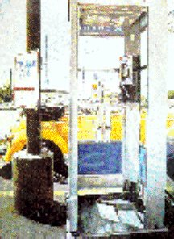

|
confessional I protest your schoolgirl charm and Minnie Mouse eyebrows. But I digress. Evening staggers along Boylston Street dreaming of designer coffees. my Visa card is maxed and I have no cell phone. I am struggling to understand that Prudential is not an adjective while the leaves are falling before my eyes. Tomorrow in a sacred shrine of plexiglass I will accept the fact that your all-too-rare smile is not for me. Paul David Mena 9 October, 1996 Boston, MA |
 |
back to Paul's Poetry Page